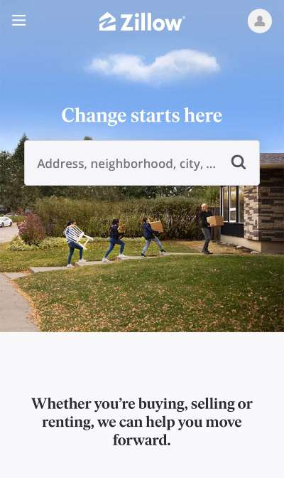

Contrast
TARGET
Target.com uses contrast to create visual interest in their website design through color and through the size/weight of the typeface. Target is known for its use of contrasting colors red and white; however, the company also employed grey and black to create additional contrast. The screenshot of Target’s homepages demonstrates how the company also uses size and weight in the text to create a contrast that causes visual hierarchy.
Visual Hierarchy
ANCESTRY
Ancestry.com utilizes visual hierarchy through size and color. In the above screenshot, the eye is immediately drawn to the largest text, “Every family has a story.” Next the eye is drawn to the bright green CTA button. The eye continues from text to images, until it finally rests. Visual hierarchy was enabled through the use of contrast and whitespace.
White Space
ZILLOW
Zillow does an excellent job using white space and clean design. The page is kept simple so that the user is not distracted. The body copy was strategically placed with center alignment to create visual whitespace around the text. Additionally, the tagline was placed in the whitespace of the background image. This allowed the text to not compete with the image.